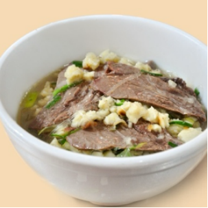
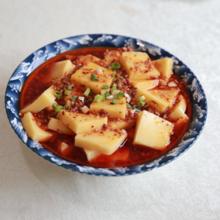
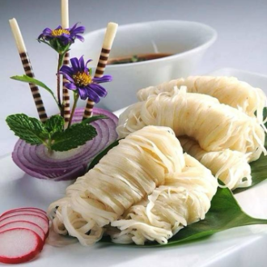
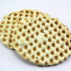
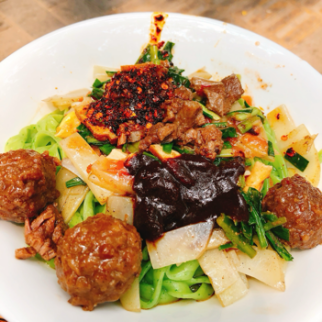
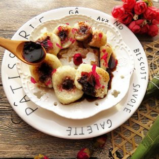
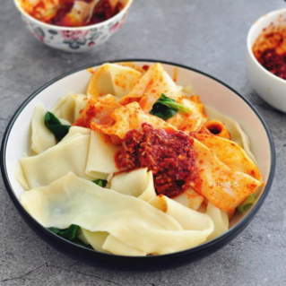

羊肉泡馍
羊肉泡馍是陕西西安的国家级非遗美食，西北饮食文化的代表，以 “肉烂汤浓、馍筋耐煮” 为核心，是刻在西安人骨子里的烟火味道。
羊肉泡馍的制作工艺严苛讲究，选用陕北绵羊或宁夏滩羊，搭配羊骨与十余种香料，文火慢炖出乳白老汤；以关中小麦粉烙制 “铁圈虎背菊花心” 的饦饦馍，由食客亲手掰成黄豆大小，入滚汤猛火快煮，最大程度锁住肉香与麦香，成品肉酥不柴、汤鲜不膻、馍筋入味。
西安羊肉泡馍融合了丝路饮食的开阔与关中风味的醇厚，依托关中平原温润的气候与深厚的饮食底蕴，形成了独树一帜的风味体系。无需复杂的烟熏工艺，仅靠一锅代代相传、越陈越香的老汤与一张手工现烙的馍，便成就了这道经典的非遗美味。成品汤色乳白浓醇，肉香、骨香与麦香层层交融，入口醇厚暖胃，回味悠长，真正做到了油润而不膻、香糯而不腻，既是西安古城历史底蕴的生动体现，也是陕西美食对外最具辨识度的金字招牌之一。
西安美食鉴赏

搅团

金线油塔

石子馍

菠菜面

蜂蜜凉粽

蒜蘸面